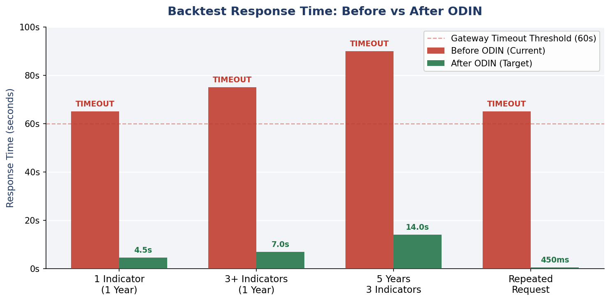
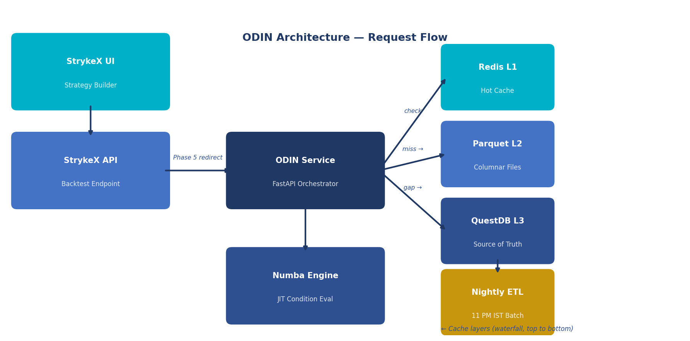
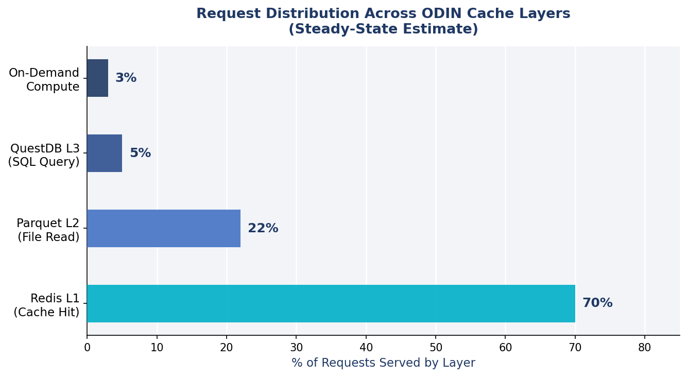
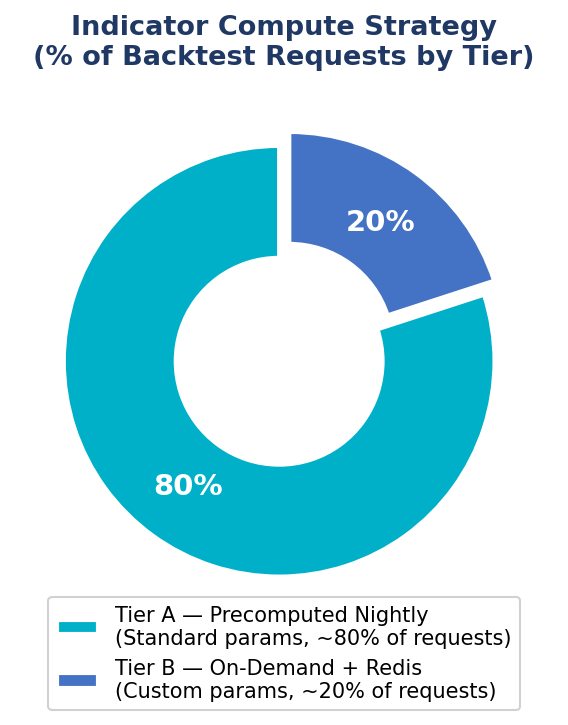
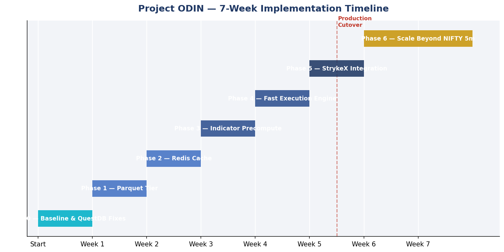

Project ODIN
Optimized Data Infrastructure for NSE Backtesting Engine — a multi-tier acceleration layer for StrykeX Strategy Builder.
Executive Brief
StrykeX backtest requests for NIFTY 5-minute strategies currently timeout due to unbounded QuestDB scans, per-request indicator recomputation, and single-threaded Python execution. Project ODIN introduces a multi-tier data and compute acceleration layer — Redis, Parquet, Polars, and Numba — between the StrykeX Strategy Builder and QuestDB.
The StrykeX UI remains unchanged. Only the backtest backend is augmented. Target outcome: cold backtest response from 60+ second timeout to under 8 seconds; repeat requests under 500ms.
Recommended Action: Approve Phase 0 + Phase 1 immediately. No new infrastructure required. Production cutover at Phase 5 (Week 6).
1. Executive Summary
StrykeX users building strategies on NIFTY 5-minute charts routinely encounter timeout errors and multi-minute wait times when running backtests. Root cause analysis identifies three compounding failures in the current path: (1) unbounded QuestDB scans that fetch years of data regardless of user-specified date ranges, (2) full indicator recomputation from scratch on every request, and (3) single-threaded Python loops for condition evaluation.
Project ODIN is a dedicated backtest data and compute acceleration service that sits between the existing StrykeX Strategy Builder and QuestDB. It introduces a four-layer stack — Redis hot cache, Parquet columnar store, nightly indicator precomputation, and a Numba JIT execution kernel — to serve the majority of backtest requests in under 10 seconds without touching QuestDB at runtime.
The StrykeX frontend and user experience remain completely unchanged. ODIN is a backend-only acceleration layer — no UI modifications are required in this project scope.

benchmarks/odin_nifty_5m.py.2. Problem Statement
The StrykeX Strategy Builder guides users through a four-step flow to configure and run a backtest: (1) Strategy Overview — instrument, segment; (2) Strategy Setup — chart timeframe, spot/futures; (3) Entry & Exit Criteria — indicators and conditions; (4) Preview and Deployment — backtest execution.
2.1 Current Failure Modes
- Backend fetches full 5-year OHLC history from QuestDB on every request, regardless of user-specified date range
- Every indicator (RSI, EMA, MACD, ATR, Bollinger Bands) is recomputed from raw OHLC on every single backtest run
- Condition evaluation loop runs as single-threaded Python, iterating candle-by-candle
- HTTP gateway timeout threshold (typically 30–60 seconds) is hit before results return
- Second run of the identical strategy produces the same slow path — no caching layer exists today
2.2 Impact on Users
3. Proposed Solution — ODIN Architecture
ODIN introduces a multi-tier acceleration layer. Each tier attacks a distinct bottleneck. The layers are ordered by speed — a hit at L1 (Redis) bypasses all slower tiers below. Only requests with no cached data reach QuestDB.
| Layer | Technology | Purpose | When Bypassed |
|---|---|---|---|
| L0 — RAM Preload | HotStore (in-process) | Startup prewarm of NIFTY 5m slices | First user click (prototype) |
| L1 — Hot Cache | Redis 7 | In-memory OHLC + indicator blobs (Arrow IPC) | Every subsequent identical request |
| L2 — Column Store | Apache Parquet | Monthly columnar files per symbol/timeframe | Full cache hit at L1 |
| L3 — Source | QuestDB (existing) | Ground truth for all market data — never removed | Always checked on gap only |
| L4 — Engine | Polars + Numba JIT | Vectorized indicator compute + condition evaluation | N/A — always executes on request |
| Batch | Nightly ETL (11PM IST) | Exports NIFTY 5m + precomputes Tier A indicators offline | Runs off-peak; never on request path |


4. StrykeX UI → ODIN Parameter Mapping
ODIN exposes POST /v1/backtest and POST /v1/backtest/strykex. The existing StrykeX backtest API forwards requests to ODIN in Phase 5 via feature flag USE_ODIN=true.
| StrykeX UI Field | ODIN Parameter | Notes |
|---|---|---|
| Instrument (NIFTY) | symbol=NIFTY | Phase 1 scope; BANKNIFTY in Phase 6 |
| Chart Time Frame (5 Minute) | timeframe=5m | Phase 1 scope; 1m/15m/1h in Phase 6 |
| Chart Selection (Spot) | series=spot | QuestDB table and symbol key lookup |
| Entry conditions | entry_rules[] | Array of {indicator, operator, value} |
| Exit conditions | exit_rules[] | Indicator, time-based, SL/target exits |
| Date range | start, end | Default: last 1 year; unbounded 5y rejected |
5. QuestDB Query Contract (Phase 0 — Immediate Win)
Before any new infrastructure is deployed, significant latency reduction is achievable by enforcing bounded, column-specific queries against QuestDB. The current path issues unbounded SELECT * queries across the full partitioned table — a preventable anti-pattern.
5.1 Required Query Pattern
Every ODIN query to QuestDB must conform to the following contract. Unbounded queries are rejected at the API layer before execution:
SELECT timestamp, open, high, low, close, volume FROM ohlc_5m WHERE symbol = 'NIFTY' AND timeframe = '5m' AND timestamp >= '2024-01-01T00:00:00.000000Z' AND timestamp < '2025-01-01T00:00:00.000000Z'
5.2 Required Schema Checks
- Table must be partitioned by MONTH or DAY on the timestamp column
- Filters on
symbolandtimeframemust be in the WHERE clause — never filtered in Python post-fetch SELECT *is prohibited; only required columns are fetched- Designated timestamp column must align with StrykeX 5-minute candle definitions
6. Parquet Storage Layout
Monthly Parquet files per symbol/timeframe replace hot SQL reads for the backtest data path. Apache Arrow (used by Polars) reads Parquet 10–30× faster than equivalent SQL for analytical column scans — the exact access pattern of backtesting.
data/parquet/
ohlc/
NIFTY/5m/
2021-01.parquet
2021-02.parquet
... (monthly partitions)
2026-06.parquet
indicators/
NIFTY/5m/
2024-01.parquet # rsi_14, ema_9, ema_20, atr_14, bb_upper, bb_lower, macd_*
catalog.json # manifest: min_ts, max_ts, available months per symbol/TF
Nightly ETL exports only NIFTY 5m initially. All other symbols and timeframes remain served by QuestDB until Phase 6. Estimated storage: 500 MB – 2 GB for full NIFTY 5m history.
7. Indicator Strategy
Indicator computation is the dominant compute cost for multi-indicator strategies. ODIN eliminates per-request indicator recomputation through a two-tier approach:
7.1 Tier A — Precompute Nightly (Standard Parameters)
Covers approximately 80% of user requests. Computed offline during the nightly ETL batch and stored in Parquet indicator files. Zero compute cost on the request path.
- Price fields: open, high, low, close, volume (from OHLC Parquet)
- Moving averages: EMA 9, 20, 50, 200; SMA 20, 50
- Momentum: RSI 14, MACD (12, 26, 9), Stochastic (14, 3, 3)
- Volatility: ATR 14, Bollinger Bands (20, 2)
- 96 StrykeX catalog indicators in PostgreSQL — see
docs/indicator-catalog.md
7.2 Tier B — On-Demand + Redis Cache (Custom Parameters)
Custom parameter combinations (e.g., RSI 21 instead of 14). Computed once with Polars on first request, then cached in Redis.
Cache key format: ind:NIFTY:5m:RSI:21:{start_hash}:{end_hash}

8. Phased Rollout Plan
ODIN is delivered across six production phases plus an initial baseline phase. Each phase has a single objective, a measurable exit criterion, and leaves the StrykeX UI unaffected.
| Phase | Name | Timeline | Primary Goal | Status |
|---|---|---|---|---|
| Phase 0 | Baseline & QuestDB Fixes | Week 1 | Immediate win — no new infra | Complete |
| Phase 1 | Parquet Tier | Week 2 | 10–30× faster analytical reads | Complete |
| Phase 2 | Redis Cache | Week 3 | Eliminates repeat-request latency | Complete |
| Phase 3 | Indicator Precompute | Week 4 | Multi-indicator compute cost | Complete |
| Phase 4 | Fast Execution Engine | Week 5 | 10×+ Numba JIT speedup | Complete |
| Phase 5 | StrykeX Integration | Week 6 | Production cutover | Pending |
| Phase 6 | Scale Beyond NIFTY 5m | Week 7+ | Full catalog + Ray grid | Planned |

Profile latency breakdown; apply bounded query contract; document StrykeX API schema.
Nightly export to monthly Parquet; pl.scan_parquet read path; QuestDB on gap only.
OHLC + indicator slice keys; 24h TTL; /metrics cache hit rate.
Tier A to Parquet; IndicatorResolver waterfall; 96-indicator catalog in PostgreSQL.
Polars prep → @njit kernel; maps all StrykeX condition operators.
USE_ODIN=true feature flag; optional async path for 5-year ranges only.
BANKNIFTY + all instruments; 1m/15m/1h; Ray multi-instrument grid sweeps.
9. Timeout Fix Summary
| Root Cause | ODIN Fix | Phase | Expected Gain |
|---|---|---|---|
| Full 5-year QuestDB scan | Date-bounded queries + monthly partition pruning | 0 | 2–5× immediate |
| Slow SQL columnar reads | Parquet L2 replaces SQL for backtest loads | 1 | 10–30× |
| Repeat identical requests | Redis L1 + HotStore RAM prewarm | 2 | 100×+ (warm) |
| Per-request indicator calc | Nightly precompute + on-demand Redis cache | 3 | 20–50× for Tier A |
| Python condition loop | Numba JIT @njit kernel on NumPy arrays | 4 | 10×+ |
| Gateway timeout (60s) | All above combined → response under 10s | 5 | End-user fix |
10. Success Metrics
The following KPIs define ODIN's success criteria. All measurements are against the NIFTY 5-minute backtest path.
| Metric | Current | ODIN Target | Improvement |
|---|---|---|---|
| 1-Year, 1 Indicator | ~65s (TIMEOUT) | < 5s | 13×+ |
| 1-Year, 3+ Indicators | ~75s (TIMEOUT) | < 8s | 9×+ |
| 5-Year, 3 Indicators | ~90s (TIMEOUT) | < 15s | 6×+ |
| Repeat Same Request | ~65s (TIMEOUT) | < 500ms | 130×+ |
| UI Timeout Rate | High (>50%) | < 1% | >50× |
Secondary KPI: Redis cache hit rate ≥ 70% in steady state. Measured via GET /metrics.
11. Infrastructure Requirements
| Component | Role | Status | Spec |
|---|---|---|---|
| QuestDB | Source of truth — OHLC | Existing + Docker | Host port 47900; exports NIFTY 5m first |
| PostgreSQL 16 | Indicator catalog + indicator_bars | Deployed | Host port 47132; odin schema |
| Redis 7 | L1 hot cache | Deployed | Host port 47179; 4–8 GB RAM prod |
| Parquet on SSD | L2 column store | Active | ~500 MB–2 GB NIFTY 5m |
| ODIN API | FastAPI orchestrator | Deployed | Host port 47100; prewarm on startup |
| StrykeX Frontend | Strategy Builder UI | Unchanged | No UI modifications |
| Nightly ETL | QuestDB → Parquet + indicators | Active | Cron 23:00 IST; idempotent |
Hadoop/HDFS is not appropriate at this data scale (5–50 GB). Apache Parquet and Apache Arrow apply directly without a distributed cluster.
12. Risks and Mitigations
| Risk | Likelihood | Impact | Mitigation |
|---|---|---|---|
| Unknown QuestDB schema | High | High | Phase 0 documents schema; docs/questdb-schema.md |
| StrykeX indicator name mismatch | Medium | Medium | registry.yaml + 96-indicator catalog |
| ODIN response shape mismatch | Medium | High | /v1/backtest/strykex adapter normalizes JSON |
| 5m resampled vs native candles | Medium | High | Confirm QuestDB source with data team |
| Cache staleness after market close | Low | Medium | Nightly ETL + Redis invalidation + prewarm |
| Redis memory exhaustion | Low | Medium | Arrow IPC blobs; monitor via /metrics |
13. Repository Structure
Optimized Data Infrastructure For Backtesting Engine/ ├── docs/ architecture, questdb-schema, postgres-schema, indicator-catalog ├── packages/ │ ├── odin_data/ QuestDB, Parquet, Redis, HotStore, PostgreSQL │ ├── odin_indicators/ registry.yaml, strykex_catalog (96 indicators) │ └── odin_engine/ BacktestEngine, Numba kernel ├── services/ │ ├── odin_api/ FastAPI — /v1/backtest, /v1/prefetch, /v1/indicators │ └── nightly_etl/ export, precompute ├── infra/docker-compose.yml odin-postgres, odin-redis, odin-questdb, odin-api ├── scripts/ setup_questdb_pipeline, prewarm_cache, sync_postgres └── benchmarks/ baseline_strykex.py, odin_nifty_5m.py
14. Open Items — Required Before Production
The following information must be provided by the StockWiz team:
- QuestDB connection details and exact table name for NIFTY 5m spot OHLC (host, port, database, TLS)
- Current StrykeX backtest API endpoint and full request/response JSON schema
- Full list of indicators in Entry & Exit Criteria dropdowns (exact UI names)
- Default backtest date range when user does not specify one
- HTTP timeout value on gateway/load balancer (to define ODIN SLA)
Items 1 and 3 are hard blockers for Phase 0 and Phase 3. Items 2 and 5 are required before Phase 5.
15. Manager Demo Plan (End of Phase 5)
- Open StrykeX Strategy Builder in browser
- Build strategy: NIFTY → 5 Minute → Spot → 2 entry indicators → Run Backtest
- With
USE_ODIN=false: demonstrate timeout or 60+ second wait - With
USE_ODIN=true: results in under 5 seconds - Run identical strategy again — sub-500ms from Redis cache hit
- Present
/metrics: cache_hit_rate, p95_latency_by_tier, QuestDB bypass rate - Architecture walkthrough: QuestDB → Parquet → Redis → HotStore → Numba Engine
16. Recommendation
Approve Phase 0 and Phase 1 to begin immediately. These phases require no new infrastructure beyond QuestDB query contract enforcement and Parquet file export on existing hardware. Together they deliver the majority of total latency improvement — estimated 10–30× — before Redis caching or engine optimizations.
Full production integration (Phase 5) is achievable within 6 weeks from Phase 0 kickoff. Phase 6 can proceed incrementally without impacting NIFTY 5m production stability.
| Action Required | Detail |
|---|---|
| Approve Phase 0 + Phase 1 | Confirm QuestDB schema details and begin baseline profiling this week |
| Provide Open Items 1–5 | Share QuestDB connection, API schema, indicator list, timeout value |
| Set Phase 5 demo date | Agree on Week 6 demo date for manager sign-off before production cutover |
| Approve Phase 5 integration | Enable USE_ODIN=true on StrykeX staging backtest API |